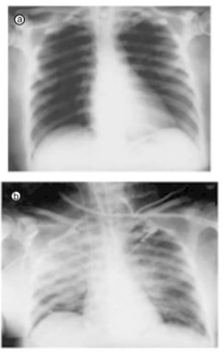

Questão 1 · TRALI Lesão Pulmonar Aguda Associada à Transf usão · Sobrecarga de volume TACO · 4000183409Um paciente portador de cirrose alcoólica foi admitido na UTI após apresentar hemorragia varicosa que se desenvolveu no terceiro dia de tratamento de peritonite bacteriana espontânea. Após estabilização hemodinâmica e realização de endoscopia, estava recebendo a segunda unidade de concentrado de hemácias, quando passou a apresentar febre, calafrios e dispneia. Rapidamente evoluiu com grave insu ciência respiratória hipoxêmica e, durante a intubação orotraqueal, foi observada uma secreção rósea espumosa em vias aéreas. Sobre o quadro descrito, assinale a alternativa CORRETA.
A A causa provável da insuficiência respiratória é sepse de foco abdominal
B Devem-se evitar novas hemotransfusões por um período de 120 dias em pacientes que sobrevivem a essa complicação.
C Antecedente de múltiplas transfusões é fator de risco para essa complicação.
D O banco de sangue deve ser notificado para que possa identificar o doador e impedi-lo de realizar novas doações de sangue.
E Após a intubação orotraqueal, é possível dar prosseguimento àquela hemotransfusão, desde que seja descartada a hipótese de hipervolemia.
Questão 2 · TRALI Lesão Pulmonar Aguda Associada à Transf usão · 4000182244Mulher de 66 anos, hipertensa, com insu ciência cardíaca e diagnóstico de mielo brose primária, com necessidade de suporte transfusional semanal, procura o ambulatório de hematologia para transfusão de concentrado de hemácias. Após 30 minutos do início da infusão, a paciente apresenta febre de 38,3°C, dispneia e dessaturação. A radiogra a de tórax evidencia in ltrado alveolar bilateral difuso. Não havia icterícia, dor abdominal ou alteração da cor da urina. Nesse caso, a reação transfusional está associada a:
A sepse bacteriana
B lesão pulmonar aguda
C sobrecarga circulatória
D reação hemolítica aguda
Questão 3 · Hemolítica · 4000181360Paciente, 32 anos, portador de anemia falciforme. Encontra-se no 3º dia de internação hospitalar, em enfermaria, por crise álgica, sob uso de mor na, cetoprofeno e dipirona, para controle do quadro. Está hemodinamicamente estável, com bom controle álgico, diurese presente, afebril, eupneico, sem suporte de oxigênio. Apresenta hemograma do dia com Hb 5,9g/dL Ht 17%, sendo indicada transfusão de concentrado de hemácias desleucocitado e fenotipado. Após 12 minutos do início da administração do hemocomponente, pela enfermeira da unidade, o paciente passa a apresentar febre (T: 38,3ºC), calafrios, dor no local do acesso periférico, dor em ancos e epistaxe. Você, como médico plantonista da unidade, é imediatamente chamado para prestar assistência ao paciente. Ao chegar, você solicita imediata interrupção da transfusão, prescreve sintomáticos, noti ca a suspeita de reação transfusional e solicita coleta de amostras para análise da reação pelo serviço de hemoterapia. Além das ações citadas, qual a melhor conduta a ser realizada?
A Devolver hemocomponente à agência transfusional, solicitar provas de hemólise, função renal, coagulograma e hemoculturas do paciente e prescrever hidratação vigorosa
B Coletar hemocultura do paciente, retornar a transfusão com o mesmo hemocomponente, após resolução dos sintomas, e administrá-lo em 4 horas.
C Coletar novo hemograma, devolver hemocomponente à agência transfusional e só prescrever hemocomponentes lavados para transfusões futuras.
D Descartar concentrado de hemácias, solicitar que enviem novo concentrado para transfusão imediata e administrá-lo em 4 horas.
Revisar: possível letra faltando em enunciado
Questão 4 · TRALI Lesão Pulmonar Aguda Associada à Transf usão · 4000167122Sobre a injúria pulmonar aguda relacionada à transfusão (
A só ocorre nas tranfusões de concentrado de hemáceas.
B o uso de corticoides sistêmicos está indicado.
C nos casos em que a ventilação mecânica seja necessária, volume corrente >8mL/Kg e pressão média de via aérea acima de 30cm de H20 estão indicados.
D o início dos sintomas em até 06 (seis) horas da transfusão é um dos critérios diagnósticos.
E o uso de diurético de alça está indicado.
Questão 5 · Concentrado de plaquetas · Concentrado de hemácias · 4000167103Um paciente em tratamento oncológico quimioterápico, que terá programação de tratamento cirúrgico em breve, apresenta astenia importante, porém nega vômitos ou sangramentos. Foram realizados exames laboratoriais. Qual das alternativas a seguir representa indicação de transfusão de ambos os componentes – hemácias e plaquetas – para esse paciente?
A Hemoglobina = 9,1g/dL e plaquetas = 21000/mm³.
B Hemoglobina = 6,2g/dL e plaquetas = 18000/mm³.
C Hemoglobina = 6,8g/dL e plaquetas = 7000/mm³.
D Hemoglobina = 10,1g/dL e plaquetas = 11000/mm³.
E Hemoglobina = 7,5g/dL e plaquetas = 11000/mm³.
Questão 6 · Sobrecarga de volume TACO · 4000163448Paciente de 72 anos, sexo masculino, foi internado por anemia sintomática, com dosagem de hemoglobina sérica de 6 g/dL. O médico plantonista solicitou a transfusão de 3 unidades de concentrado de hemácias (CH) na tarde de hoje. Você é acionado(a) para reavaliar o paciente logo no início da transfusão da terceira unidade de CH por ele apresentar quadro de dispneia, iniciada durante a transfusão da segunda unidade de CH, com necessidade de oxigênio suplementar, associada a taquicardia e elevação da pressão arterial, sem febre ou outras queixas. Além da avaliação radiológica complementar, frente ao quadro clínico apresentado, o diagnóstico provável e a conduta correta são, respectivamente:
A reação transfusional hemolítica – suspensão da transfusão e administração de metilprednisolona.
B lesão pulmonar aguda associada à transfusão (TRALI) – suspensão da transfusão e administração de metilprednisolona.
C congestão pulmonar associada à transfusão (TACO) – suspensão da transfusão e administração de diurético.
D lesão pulmonar aguda associada à transfusão (TRALI) – administração de metilprednisolona e continuidade da transfusão.
E congestão pulmonar associada à transfusão (TACO) – administração de diurético e continuidade da transfusão.
Questão 7 · Reações transf usionais · 4000151720A respeito das reações adversas relacionadas à transfusão dos componentes sanguíneos podemos afirmar que:
A A reação transfusional febril não hemolítica é caracterizada por sintomas como calafrios, tremores e elevação da temperatura = 1ºC, ocorrendo imprescindivelmente até 1 hora após o término da transfusão.
B As reações alérgicas leves podem se apresentar como prurido, urticária, tosse, rouquidão. Após o tratamento e resolução dos sintomas é possível retornar a infusão do hemocomponente.
C Dentre as reações adversas mediadas imunologicamente, podemos citar: sobrecarga hídrica, hipotermia, doença do enxerto versus hospedeiro e hipercalemia.
D A Injúria Pulmonar Relacionada à Transfusão (TRALI) é uma complicação grave, rara, não mediada imunologicamente e o tratamento é suporte clínico.
Questão 8 · Concentrado de plaquetas · 4000141658O hemocomponente e a situação que melhor indicaria seu uso são:
A concentrado de hemácias para paciente anêmico crônico, com Hb de 8 g/dL e FC de 66 bpm.
B concentrado de plaquetas para paciente sem sangramento que será submetido inadiavelmente à cirurgia cardíaca e apresenta plaquetometria de 70 000/mm³.
C crioprecipitado para paciente com sangramento intraoperatório, com plaquetometria de 30 000/mm³, tempo de protrombina com RNI de 3,5 e fribrinogênio de 180 g/dL.
D plasma fresco congelado para paciente sem sangramento e com tempo de protrombina com RNI de 6.
Questão 9 · TRALI Lesão Pulmonar Aguda Associada à Transf usão · Hematologia · 4000140621Uma mulher de 20 anos, estudante, recém-diagnosticada com leucemia linfoide aguda, está recebendo transfusão pro lática de plaquetas para uma contagem de 5.000/mm3. Aproximadamente 10 minutos após início da transfusão, a taxa de oxigênio caiu de 98% para 65%, a pressão arterial caiu de 120x60 mmHg para 80x40 mmHg. A paciente está, visivelmente, agônica com rápida deterioração clínica. Uma intubação de emergência foi realizada com copiosa eliminação de líquido claro pela cânula. O diagnóstico mais provável para o quadro atual do paciente é
A lesão aguda pulmonar relacionada à transfusão (TRALI).
B sepsis relacionada à transfusão.
C reação anafilática relacionada à transfusão.
D transtorno de sobrecarga circulatória aguda (TACO).
Questão 10 · Concentrado de plaquetas · 4000131065Sobre o uso racional de hemoderivados, qual dos pacientes abaixo apresenta indicação para transfusão de pool plaquetário?
A Paciente com quadro clínico de leucemia mieloide aguda e com 33mil plaquetas, em tratamento para aspergilose invasiva.
B Paciente com quadro de purpura trombocitpenica trombótica com 20 mil plaquetas e gengivorragia.
C Paciente com anemia aplásica com 55 mil plaquetas e epistaxe.
D Paciente com Leucemia Linfocitica aguda e quadro de neutropenia febril (temperatura de 38,3º) e com 15 mil plaquetas, mas sem sangramento ativo.
Questão 11 · TRALI Lesão Pulmonar Aguda Associada à Transf usão · 4000107587Homem, 55 anos, é admitido em unidade de emergência com quadro de fezes enegrecidas, amolecidas e de odor fétido há 2 dias. Há 3 horas, sensação de fraqueza, tonturas e lipotímia. Antecedentes pessoais: brilação atrial em uso de varfarina e hipertensão em uso de losartana. Exame físico: descorado ++/4+, desidratado +/4+, FC = 112 bpm; PA = 80 x 55 mmHg; peso = 70 kg; presença de hematomas de até 3 cm em tronco e membros inferiores. Exames laboratoriais: Hb = 10,1 g/dL e INR > 10. Foram administrados 600 mL de plasma fresco, associado à vitamina K endovenosa. Seis horas após a transfusão, o paciente cursou com desconforto respiratório intenso, dessaturação acentuada e necessidade de ventilação mecânica. As radiografias realizadas, antes e após o evento descrito, estão ilustradas a seguir. A primeira hipótese diagnóstica é de

A reação hemolítica aguda.
B reação anafilática.
C lesão pulmonar aguda relacionada à transfusão.
D edema pulmonar aguda por sobrecarga de volume.
E tromboembolismo pulmonar maciço.
Questão 12 · Concentrado de hemácias · 4000073723Em pacientes em cuidados intensivos e sem evidências de sangramento ativo, o nível de hemoglobina sérica, desencadeador da necessidade de transfusão sanguínea, deve ser inferior a
A 6mg/dL.
B 7mg/dL.
C 8mg/dL.
D 9mg/dL.
Questão 13 · Introdução à medicina transf usional · Hemocomponentes · 4000053864Analise os casos abaixo: I. Paciente com sepse de foco pulmonar, apresentando Hb=8g/dL. II. Paciente com neutropenia febril, pós quimioterapia, apresentando 4.800 plaquetas/µL. III. Paciente com fratura do colo do fêmur, apresentando 65.000 plaquetas/ µL. IV. Paciente em uso de varfarina, com sangramento gastrointestinal maciço. Apresentam indicação de transfusão de hemocomponente apenas
A pacientes I e II.
B pacientes I e III.
C pacientes II e III.
D pacientes II e IV.
E pacientes III e IV.
Questão 14 · Classif icação das reações transf usionais · Introdução às reações transf usionais · 4000051737Homem, 80 anos, diabético, hipertenso e portador de insu ciência renal crônica, com hemoglobina 7,0 g/dl, evolui durante a transfusão da 2ª unidade de concentrado de hemácias com hipertensão arterial, taquicardia, dispneia e hipoxemia (Saturação: 80%). Das reações transfusionais abaixo, a mais provável para justificar o quadro clínico é:
A Reação hemolítica aguda.
B Contaminação bacteriana.
C Sobrecarga volêmica.
D TRALI (insuficiência pulmonar aguda associada à transfusão.
E Reação anafilática.
Questão 15 · Hemocomponentes · 4000045959Sobre as indicações clínicas para o uso de componentes sanguíneos, marque a alternativa incorreta:
A Está indicado transfusão de hemácias em pacientes com hemoglobina < 8 g/dL ou perda aguda de sangue em paciente saudável, com sinais ou sintomas de diminuição de oferta de oxigênio.
B Está indicado transfusão de hemácias em pacientes com hemoglobina < 10 g/dL em pacientes que sabidamente tem risco aumentado de doença arterial coronariana que tiveram ou esperam que venham a ter hemorragia significativa.
C Transfusão de hemácias em pacientes assintomáticos, estáveis, com hemoglobina entre 7 g/dL e 10 g/dL, apresenta indicação questionável ou sem fundamento.
D Deveremos usar transfusão de plaquetas (para profilaxia) em pacientes com contagem recente (menos de 24 horas) < 50.000/mm³.
E Transfusão de plasma não é justificada para reposição de volume, suplementação nutricional e hipoalbuminemia.
Questão 16 · Introdução à medicina transf usional · 4000030321O crioprecipitado contém todos os fatores de coagulação, EXCETO:
A Fator XIII.
B Fator de Von Willebrand.
C Fator IX.
D Fator VIII.
Questão 17 · TRALI Lesão Pulmonar Aguda Associada à Transf usão · 4000130282Homem, 56a, admitido em Unidade de Emergência por fezes pretas, amolecidas e de odor fétido há 2 dias e tonturas há 3 horas. Antecedentes pessoais: fibrilação atrial, CHADS2=2 em uso de varfarina. Exame físico: descorado ++/4+, desidratado +/4+, FC= 104 bpm; PA= 82x55 mmHg; Peso= 72 kg; Pele: hematomas de até 3 cm em tronco e membros inferiores. Hb= 11,1 g/dL e RNI > 10. Administrados 600ml de plasma fresco congelado associado a vitamina K endovenosa. Seis horas após o paciente evoluiu com desconforto respiratório e necessidade de ventilação mecânica. Radiograma de tórax: opacidades heterogêneas bilaterais. O DIAGNÓSTICO É:
A Sobrecarga circulatória relacionada à transfusão.
B Lesão pulmonar aguda relacionada à transfusão.
C Reação hemolítica aguda.
D Reação anafilática à vitamina K.
Questão 18 · Introdução à medicina transf usional · 4000122807Paciente do sexo masculino, de 55 anos de idade, necessitou de transfusão de 02 concentrados de hemácias no pós- operatório de troca valvar mitral. Após 20 minutos do início da segunda bolsa, apresentou febre de 38,5°C, sem outros sintomas. Diante dessa situação, a melhor conduta a ser adotada é parar a transfusão, manter acesso com soro, fazer antitérmico:
A não notificar incidente transfusional leve, mas devolver hemocomponente. Na próxima transfusão, preferir hemocomponente lavado.
B otificar incidente transfusional e reiniciar a transfusão após defervescência. Na próxima transfusão, preferir hemocomponente desleucocitado.
C notificar incidente transfusional e devolver hemocomponente. Na próxima trasnfusão, preferir hemocomponente desleucocitado.
D não notificar incidente trasnfusional leve. Na próxima transfusão, preferir hemocomponente desleucocitado.
E nenhuma das respostas anteriores.
Questão 19 · Concentrado de hemácias · 4000115509Com relação à transfusão de Concentrados de Hemácias, responda a alternativa correta:
A Para um paciente com anemia e plaquetopenia utiliza-se, preferencialmente, sangue total ao invés de concentrados de glóbulos.
B Devemos transfundir quantas unidades forem necessárias, para deixar o paciente com 10 g/dl de hemoglobina.
C Uma unidade de concentrado de glóbulos tem hematócrito próximo de 80%, eleva a hemoglobina em 1 grama/dl em um indivíduo de 70 Kg e deve ser transfundida em 1 a 4 horas.
D O uso de filtro de leucócitos evita reações transfusionais como hemólise e febre.
Questão 20 · Introdução à medicina transf usional · 4000114170Homem, 72 anos de idade, está em preparo para gastrectomia devido a neoplasia gástrica. Recebeu transfusão de 3 concentrados de hemácias e evoluiu com dispneia e ortopneia intensas. Ao exame afebril, saturação de O₂ = 90%, em ar ambiente, repouso; pressão arterial: 120 x 80 mmHg, frequência cardíaca: 102 batimentos/minuto, sinusal e estertores nos nos 2/3 inferiores de ambos os hemitóraces. Radiogra a simples de tórax revela congestão pulmonar. A reação transfusional e a conduta a ser adotada, são, respectivamente:
A TRALI (injúria pulmonar relacionada a transfusão); corticosteroides
B Reação hemolitica aguda; corticosteroides
C Doença enxerto X hospedeiro; imunoglobulina
D TACO (sobrecarga cardíaca associada a transfusão); diuréticos
E Hipersensibilidade do tipo; prometazina
Questão 21 · Classif icação das reações transf usionais · 4000112556Assinale a alternativa que indica a reação mais comum no ato da transfusão sanguínea
A Reação anafilática.
B Reação hemolítica intravascular.
C Reação hemolítica extravascular.
D Reação febril não hemolítica.
E Reação febril por contaminação bacteriana.
Questão 22 · Concentrado de plaquetas · 4000106237São indicações de transfusão de concentrado de plaquetas:
A Plaquetopatias constitucionais com sangramento ativo, plaquetopenia em vigência de sangramentos, profilaxia de sangramento em colecistectomia em paciente com contagem de plaquetas de 80000/mm³.
B Plaquetopenia em vigência de sangramentos, profilaxia de sangramento em paciente com 20000/mm³ de plaquetas, com diagnóstico de plaquetopenia imune, plaquetopatias constitucionais com sangramento ativo.
C Plaquetopatias constitucionais sem sangramento ativo, profilaxia de sangramento em cirurgia oftalmológica em paciente com contagem de plaquetas de 90 000/mm³, profilaxia de sangramento em paciente que será submetido a biópsia de medula óssea com contagem plaquetária de 25000/mm³.
D Plaquetopatias constitucionais com sangramento ativo, profilaxia de sangramento em paciente que será submetido a punção lombar com 55 000/mm³ de plaquetas, profilaxia de sangramento em paciente com 30000/mm³ e diagnóstico de púrpura trombocitopênica trombótica.
E Plaquetopatias constitucionais com sangramento ativo, profilaxia de sangramento em cirurgia oftalmológica em paciente com contagem de plaquetas de 90000/mm³, profilaxia de sangramento em paciente com contagem de plaquetas de 45000/mm³, que será submetido a punção lombar.
Questão 23 · Agudas · 4000079327Paciente do sexo masculino, de 55 anos de idade, necessitou de transfusão de 02 concentrados de hemácias no pós- operatório de troca valvar mitral. Após 20 minutos do início da segunda bolsa, apresentou febre de 38,5°C, sem outros sintomas. Diante dessa situação, a melhor conduta a ser adotada é parar a transfusão, manter acesso com soro, fazer antitérmico,
A não notificar incidente transfusional leve, mas devolver hemocomponente. Na próxima transfusão, preferir hemocomponente lavado.
B notificar incidente transfusional e reiniciar transfusão após defervescência. Na próxima transfusão, preferir hemocomponente desleucocitato.
C notificar incidente transfusional e devolver hemocomponente. Na próxima transfusão, preferir hemocomponente desleucocitato.
D não notificar incidente transfusional leve. Na próxima transfusão, preferir hemocomponente desleucocitato.
Questão 24 · Concentrado de plaquetas · 4000077867A transfusão profilática de concentrado de plaquetas estará indicada em pacientes:
A com púrpura trombocitopênica imunológica e plaquetas em 30.000 mm³
B submetidos a punção venosa profunda e plaquetas em 50.000 mm³
C com epistaxe de origem hipertensiva e plaquetas em 70.000 mm³
D candidatos à neurocirurgia com plaquetas em 90.000 mm³
Questão 25 · Reações transf usionais · 4000064754Paciente em enfermaria hospitalar recebendo transfusão de concentrado de hemácias evolui com quadro febril acompanhado de calafrios sem instabilidade hemodinâmica. Escolha a melhor alternativa:
A Reação febril não hemolítica é complicação rara da transfusão de hemoderivados.
B Após a administração de anti-histamínico e antipirético a infusão do mesmo concentrado de hemácias pode ser reiniciado.
C O quadro acima representa claramente uma contaminação bacteriana levando a bacteremia durante a transfusão.
D A presença de anticorpos contra antígenos específicos de Antígeno Leucocitário Humano - HLA e linfócitos em receptores previamente aloimunizados está relacionada à fisiopatologia da reação febril não hemolítica.
Questão 26 · Classif icação das reações transf usionais · Introdução às reações transf usionais · 4000056062A reação febril não hemolítica é complicação comum da transfusão de hemoderivados. Assinale a melhor alternativa:
A Contaminações bacterianas são a principal fisiopatologia.
B Após a administração de antihistaminico e antipirético a infusão do mesmo concentrado de hemácias pode ser reiniciado.
C O hemoderivado que causou a reação deve ser analisado e descartado, não podendo ser reinfundido.
D A reação mais comum em pacientes submetidos a primeira transfusão.
E A reação ocorre apenas na transfusão de plasma fresco congelado.
Questão 27 · Introdução à medicina transf usional · 4000020303Em qual das seguintes situações está correta a indicação da transfusão de hemoderivados?
A Transfusão de concentrado de plaquetas em quando contagem plaquetária < 50.000/ µL, mesmo na ausência de fatores de risco.
B Transfusão de concentrado de plaquetas nos casos de dengue com contagem plaquetária < 10.000 / µL, independente da existência ou não de sangramentos.
C Transfusão de concentrado de plaquetas nos casos de cirurgia neurológica com contagem plaquetária < 100.000/ µL.
D Transfusão de concentrado de hemácias nos casos de pré-operatório de cirurgia abdominal de grande porte com Hb < 11,0 g/dL.
E Transfusão de crioprecipitado nos casos de sangramento ativo com INR > 2,0.
Questão 28 · Concentrado de plaquetas · 4000124496Transfusão de plaquetas está indicada para paciente com:
A 7 mil plaquetas/mm³ e sem evidência de sangramento.
B 20 mil plaquetas/mm³ e necessidade de paracentese.
C 60 mil plaquetas/mm³ e necessidade de traqueostomia.
D 70 mil plaquetas/mm³ e necessidade de laparotomia.
E 80 mil plaquetas/mm³ e necessidade de acesso venoso central.
Questão 29 · Concentrado de hemácias · 4000088798A transfusão de hemocomponentes é um procedimento relativamente seguro, todavia, a indicação correta é essencial para evitar incidentes adversos. Dentre as opções abaixo, a que representa o paciente que mais se beneficiaria da transfusão é:
A Feminino, 25 anos, com hipermenorreia, astenia e dor em membros inferiores. Dosagem de hemoglobina de 5,0 e VCM de 70.
B Masculino, 67 anos, neoplasia de pâncreas, dispneia aos médios esforços. Dosagem de hemoglobina de 7,5 e VCM de 85.
C Feminino, 30 anos, diagnóstico provável de anemia aplástica, com astenia. Dosagem de hemoglobina de 6,5 e VCM de 88.
D Masculino, 50 anos, insuficiência renal dialítica, assintomático. Dosagem de hemoglobina de 8,0 e VCM de 80.
Questão 30 · Agudas · 4000076613Durante uma transfusão sanguínea, um paciente apresentou prurido difuso e placas urticariformes. O procedimento CORRETO a ser realizado é:
A Por se tratar de quadro de natureza alérgica, tratar com sintomáticos e suspender a transfusão temporariamente.
B Suspender a transfusão e iniciar corticoterapia venosa em dose imunossupressora.
C Por se tratar de reação enxerto versus hospedeiro, suspender a transfusão.
D Por se tratar de reação hemolítica, suspender imediatamente a transfusão.
E Por se tratar de reação anafilática, suspender a transfusão e iniciar epinefrina.
Questão 31 · Plasma · 4000065201Dentre as opções abaixo são indicações para o uso de plasma fresco congelado, EXCETO:
A Expansão do volume sanguíneo
B Tratamento da púrpura trombocitopênica trombótica
C Correção das coagulopatias
D Suprimento de proteínas plasmáticas deficientes
E Reversão do efeito da varfarina
Questão 32 · Introdução às reações transf usionais · Plasma · 4000065200Em virtude das possibilidades de riscos de transmissão de doenças e da existência de hemoderivados, atualmente são restritas as indicações terapêuticas de plasma fresco congelado em seu estado natural, dentre elas podemos citar: Assinale a opção correta:
A Reversão urgente do efeito cumarínico.
B Reposição de perda volêmica superior à 20%.
C Suporte nutricional em pacientes hipoalbuminêmicos.
D Tratamento de grandes queimados.
Questão 33 · Reações transf usionais · 4000029775Paciente do sexo feminino, 19 anos, portadora de leucemia mieloide aguda em tratamento quimioterápico. Apresenta-se no pronto-atendimento com anemia importante (Hb: 6.2) e informa dois episódios de reação febril não hemolítica. Qual a melhor escolha para a transfusão de concentrado de hemácias nessa paciente?
A Irradiado.
B Deleucotizado.
C ) Fenotipado.
D Lavado com solução salina.
E Convencional.
Questão 34 · Introdução à medicina transf usional · Crioprecipitado · 4000002861Criopreciptido pode ser indicado nas seguintes situações, EXCETO
A coagulação vascular disseminada.
B pacientes com INR maior que 4.
C transfusão maciça.
D profilaxia para pacientes com hemofilia A.
Questão 35 · Introdução à medicina transf usional · 4000125035Paciente apresenta pancitopenia secundária e mielotoxicidade por quimioterapia. Assinale alternativa CORRETA em relação à indicação de transfusão de plaquetas nesse paciente:
A Deve-se realizar transfusão se a plaquetometria for menor que 50.000/mm³, por causa do risco de sangramento grave e espontâneo.
B Deve-se realizar transfusão, independentemente da contagem de plaquetas.
C Deve-se realizar transfusão se a plaquetometria for menor que 10.000/mm³, apenas na necessidade de procedimentos invasivos.
D Deve-se realizar transfusão se a plaquetometria for menor que 10.000/mm³, por causa do risco de sangramento grave e espontâneo.
E Deve-se realizar transfusão se a plaquetometria for menor que 50.000/mm³, independentemente da necessidade de procedimentos invasivos.
Questão 36 · Concentrado de plaquetas · 4000124977Com relação às transfusões de plaquetas, é CORRETO afirmar que:
A Na púrpura trombocitopênica imunológica, se a contagem de plaquetas estiver menor que 10.000/mm³, o paciente poderá se beneficiar da transfusão de plaquetas, considerando-se a fisiopatologia da doença.
B Na púrpura trombocitopênica trombótica, o paciente irá se beneficiar da transfusão de plaquetas, desde que a contagem de plaquetas esteja menor que 5.000/mm³.
C Na púrpura trombocitopênica trombótica, o paciente não irá se beneficiar da transfusão de plaquetas, já que os anticorpos envolvidos na fisiopatologia da doença são inespecíficos.
D Na púrpura trombocitopênica imunológica, o paciente não irá se beneficiar da transfusão de plaquetas, já que os anticorpos envolvidos na fisiopatologia da doença são inespecíficos.
E Na púrpura trombocitopênica trombótica, se a contagem de plaquetas estiver menor que 10.000/mm³, o paciente poderá se beneficiar da transfusão de plaquetas, considerando-se o risco de hemorragia espontânea.
Questão 37 · Introdução à medicina transf usional · 4000093191Assinale a assertiva INCORRETA sobre o tratamento das condições clínicas abaixo.
A Ferro e eritropoetina são opções terapêuticas que trazem benefícios clínicos a pacientes criticamente enfermos portadores de anemia.
B Crioprecipitado, rico em crioglobulinas, deve ser empregado em caso de hemorragia associada à hipofibrinogenemia e sangramento urêmico.
C Hemocomponentes desleucocitados devem ser empregados em pacientes com história de reações transfusionais febris.
D Contagem de plaquetas inferior a 10.000/mm³ é aceita como gatilho para indicação de transfusão profilática de plaquetas em pacientes criticamente enfermos.
E Não há evidência de benefício do uso de plasma fresco congelado em pacientes criticamente enfermos com alterações laboratoriais de coagulação, como elevação do tempo de protrombina, na ausência de hemorragia.
Questão 38 · Reações transf usionais · 4000088204Qual é a complicação mais frequente da transfusão de sangue?
A Sobrecarga de volume.
B Reação hemolítica.
C Vírus da imunodeficiência humana.
D Hepatite c.
E Hepatite b.
Questão 39 · Agudas · 4000081318Paciente recebendo concentrado de hemácias inicia quadro de calafrios intensos. A avaliação de sinais vitais demonstra: FC = 120; FR = 30; PA = 190 x 100 mmHg; T = 36,5°C. A conduta básica recomendada após a transfusão é:
A Administrar 20 mg de petidina, manter acesso venoso com soro, preencher ficha de notificação e devolver a bolsa para unidade transfusional.
B Administrar 100 mg de hidrocortisona, manter acesso com soro até melhora dos sintomas e reiniciar transfusão lentamente.
C Administrar 1 g de dipirona, trocar acesso venoso e devolver a bolsa para unidade transfusional.
D Administrar 500 mg de hidrocortisona, preencher ficha de notificação e, após melhora dos sintomas, reiniciar transfusão lentamente.
Questão 40 · TRALI Lesão Pulmonar Aguda Associada à Transf usão · 4000078751Uma paciente de 40 anos de idade, internada na enfermaria por hemorragia digestiva alta, apresenta dispneia súbita enquanto recebia hemotransfusão de um concentrado de hemácias (iniciada há 90 minutos). Ao exame físico, a temperatura é 39ºC, a frequência cardíaca é 115 bpm; a pressão arterial é 110 x 65 bpm e a frequência respiratória é 28 irpm, com saturação periférica de O2 de 83%. A enfermeira instalou cânula nasal de O2 a 2L/min. A ausculta pulmonar revela sibilos esparsos e estertores crepitantes difusos. A ausculta cardíaca é normal e a paciente não apresenta sinais de congestão periférica. Radiografia de tórax no leito revela infiltrado difuso bilateral. Qual o diagnóstico?
A Injúria pulmonar relacionada à transfusão (TRALI).
B Reação hemolítica transfusional aguda.
C Reação febril transfusional não hemolítica.
D Sobrecarga de volume e edema agudo de pulmão.
E Sepse.
Questão 41 · Concentrado de plaquetas · 4000076555Acerca do uso racional de plaquetas, é CORRETO afirmar que:
A A dose padrão utilizada no calculo da transfusão de plaquetas é de 5 unidades/kg no adulto.
B Não há indicação para transfusão de plaquetas profiláticas na trombocitopenia na dengue (ou seja, sem sangramento ativo).
C Deve-se transfundir plaquetas nos casos de plaquetopenia induzida por heparina se os níveis forem inferiores a 50000.
D Nos pacientes com purpura trombocitopenica idiopática deve-se transfundir profilaticamente plaquetas quando seus níveis forem inferiores a 50000.
E Na purpura trombocitopênica trombótica a transfusão está recomendada com níveis inferiores a 20000.
Questão 42 · Hemocomponentes · 4000047063Assinale verdadeiro ou falso sobre hemocomponentes e seu uso clínico: I. Deve-se transfundir concentrados de hemácias em pacientes com hemoglobina menor que 10 g/dl, mesmo em pacientes estáveis e sem sangramento agudo; II. O crioprecipitado é proveniente da centrifugação do plasma fresco congelado, sendo rico em brinogênio, fator VIII e fator de von Willebrand; III. Quando existe indicação de transfusão de plaquetas, deve-se transfundir uma bolsa de plaquetas de doador randômico para cada 10 kg de peso corporal do receptor; IV. Espera-se que uma unidade de concentrado de hemácias gere um incremento de 6% no hematócrito do paciente transfundido; V. O plasma fresco congelado pode ser utilizado para reversão do efeito anticoagulante da heparina em pacientes com sangramentos.
A V - F - F - V - V.
B F - V - V - F - V.
C F - V - V - F - F.
D F - V - V - V - F.
E V - F - F - V - F.
Questão 43 · Reações transf usionais · 4000040398Com relação às reações transfusionais, assinale a alternativa CORRETA:
A A sepse ocasionada pela contaminação bacteriana tem como etiologia bacteriana mais frequente os germes de pele, como o S. aureus e S. epidermidis
B As reações transfusionais podem ser classificadas como agudas, quando ocorrem no período de até 2 horas da transfusão, ou crônicas, quando ocorrem após 48 horas da transfusão
C A TRALI apresenta início insidioso de hipoxemia e insuficiência respiratória durante ou até 48 horas após a transfusão
D A reação febril não hemolítica ocorre com a frequência de 1 a 10 eventos a cada 50 transfusões, sendo mais frequente com o uso de concentrado de hemácias
Questão 44 · Reações transf usionais · 4000022940Com relação às reações transfusionais:
A As reações ditas leves são desconsideradas pelo NOTIVISA (Sistema de Notificação em Vigilância Sanitária).
B Os sintomas mais comuns na reação febril não hemolítica são tremores, calafrios e febre.
C A investigação e notificação da reação transfusional é de responsabilidade exclusiva do banco de sangue que distribuiu a unidade transfundida.
D O acúmulo de citocinas em concentrados de hemácias é causa de reações do tipo incompatibilidade ABO.
Questão 45 · Introdução à medicina transf usional · 4000005455Sobre os hemocomponentes, marque a opção INCORRETA:
A O crioprecipitado contém a maior parte composta por fator VIIIC e parte do fibrinogênio do plasma original. Está indicado em diversas patologias, como hemofilia A, doença de von Willebrand ou hipofibrinogenemia, entre outras.
B O plasma fresco congelado é indicado para pacientes com processos hemorrágicos por deficiências múltiplas de fatores de coagulação, secundárias à disfunção hepática, anticoagulação oral (antagonistas da vitamina K), coagulação vascular disseminada, coagulopatias dilucionais, pacientes com deficiência de antitrombina, proteína C e S, púrpura trombocitopênica trombótica, síndrome hemolítico-urêmica e pacientes submetidos à circulação mecânica.
C O sangue total restabelece a capacidade de transporte de oxigênio e promove a expansão de volume, sendo indicado para pacientes com sangramentos profusos, que desenvolvam choque hemorrágico. Uma unidade de sangue total acarretará em um incremento aproximado de 3 g/dl na concentração de hemoglobina ou 3 a 4% do hematócrito.
D As transfusões de concentrados de plaquetas podem ter indicações de caráter terapêutico ou profilático. Uma unidade de plaqueta acarretará no aumento de 5 a 12mil/mm³/m². Sabe-se que cinquenta mil/mm³ acarretam hemostasia adequada, desde que o sistema de coagulação, fibrinolítico e endotélio estejam em condições satisfatórias.
Questão 46 · Concentrado de hemácias · 4000087518A transfusão de uma unidade de concentrado de hemácias deve aumentar o valor da hemoglobina do receptor em, aproximadamente:
A 0,5 g/dl.
B 1,0 g/dl.
C 1,5 g/dl.
D 2,0 g/dl.
E 2,5 g/dl.
Questão 47 · Introdução à medicina transf usional · 4000078204Em cirurgias de grande porte, recomenda-se solicitar reserva de hemocomponentes. A opção que lista corretamente os exames realizados na agência transfusional para confirmação de reserva de concentrado de hemácias é:
A Tipagem ABO e RhD do receptor.
B Tipagem ABO e RhD; pesquisa de anticorpos irregulares do receptor; retipagem ABO e RhD do componente sanguíneo e realização de uma prova de compatibilidade entre as hemácias do doador e o soro ou plasma do receptor.
C Tipagem ABO e RhD do receptor e retipagem ABO e RhD do componente sanguíneo.
D Tipagem ABO e RhD; pesquisa de anticorpos irregulares do receptor; Coombs direto do receptor e realização de uma prova de compatibilidade entre as hemácias do doador e o soro ou plasma do receptor.
Questão 48 · TRALI Lesão Pulmonar Aguda Associada à Transf usão · 4000018247No que se refere à hemoterapia, julgue: Uma das consequências graves da transfusão de hemoderivados é a lesão pulmonar aguda relacionada à transfusão (TRALI), que leva ao edema agudo de pulmão, não cardiogênico, pelo aumento da pressão coloidosmótica devido ao alto poder osmótico dos hemocomponentes.
A Certo.
B Errado.
Questão 49 · Introdução à medicina transf usional · 4000125268Paciente, hepatopata crônico, será submetido à cirurgia de derivação de uxo hepático devido à hipertensão portal grave, com sangramento recorrente e esplenomegalia importante. Em exames pré-operatórios, foi constatada plaquetopenia: 87.000/mm³. Em relação ao caso, é INCORRETO afirmar que:
A Deve ser transfundido com concentrado de plaquetas uma semana antes da data prevista para cirurgia.
B A provável causa da plaquetopenia é a hipertensão portal e o hiperesplenismo.
C Pacientes com hiperesplenismo, geralmente, têm capacidade de responder a situaçõesde estresse e aumentar a produção medular de plaquetas.
D Pelo porte da cirurgia e pela doença de base, não há indicação específica detransfusão pré-operatória.
E É importante atentar, também, para o risco trombótico, que pode ser aumentado empacientes com hepatopatia.
Questão 50 · Reações transf usionais · 4000123278Assinale a assertiva CORRETA sobre reações transfusionais:
A A insuficiência respiratória aguda relacionada à transfusão (TRALI - Transfusion Related Acute Lung Injury) está relacionada à sobrecarga de volume durante e/ou após a hemotransfusão.
B O quadro clínico clássico de TRALI é dispneia, acompanhada de sinais de edema pulmonar sem turgência jugular ou edema periférico, com início nas primeiras horas após a transfusão.
C TRALI está relacionada à reação inflamatória causada por exposição a antígenos do doador, ocorrendo exclusivamente ao se transfundir concentrado de hemácias.
D Por se tratar de um quadro benigno, pacientes com reações febris não hemolíticas não necessitam de intervenção, mesmo os que apresentam reações recorrentes.
E Em caso de suspeita de reação transfusional hemolítica (incompatibilidade ABO), as medidas a serem adotadas incluem completar a infusão do hemoderivado, administrar soro glicosado e conferir a identificação do paciente e do hemoderivado.
Questão 51 · Medicina transf usional · 4000117230Em relação a reações transfusionais, assinale a alternativa CORRETA:
A Febre é uma reação precoce de uma série de reações transfusionais e deve ser motivo de interrupção da transfusão para evitar graves consequências.
B A ocorrência de dispneia durante a infusão lenta de sangue é geralmente atribuída à hipervolemia, e não deve ser considerada motivo de preocupação mesmo quando acompanhada de febre, cianose e hipotensão.
C A infusão de sangue contaminado se manifesta por rash cutâneo e/ou placas eritematosas disseminadas, prurido, tosse, dispneia, broncoespasmo, arritmias, hipotensão e perda de consciência.
D A irradiação dos hemocomponentes é feita de rotina, visando-se à esterilização e redução da contaminação bacteriana.
Questão 52 · Classif icação das reações transf usionais · Introdução às reações transf usionais · 4000079285Mielodisplasiassíndromes mielodisplásicas SMD Paciente com síndrome mielodisplásica vem sendo transfundido com concentrados de hemácias para manter o nível de hemoglobina. Nas últimas transfusões, apresentou quadro febril com calafrios. As culturas para rastreamento de infecções foram negativas. Esses episódios de reações transfusionais estão relacionados aos (às):
A Leucócitos.
B Plaquetas.
C Hemácias.
D Resíduos de bactérias.
Questão 53 · Classif icação das reações transf usionais · Irradiação · 4000072573Paciente imunossuprimido irá receber transfusão sanguínea. Nesse caso, está indicado irradiação do hemocomponente para prevenir reação:
A Febril não hemolítica.
B Febril hemolítica.
C Do enxerto contra hospedeiro transfusional.
D Hemolítica aguda.
E Hemolítica tardia.
Questão 54 · Classif icação das reações transf usionais · Introdução às reações transf usionais · 4000044518“Complicações relacionadas à transfusão de sangue e derivados podem ser decorrentes de reações febris agudas, alérgicas, choque anafilático, injúria pulmonar entre outros”. Analise as assertivas abaixo e assinale a alternativa correta. I. TRALI é a imunomodulação relacionada à Transfusão alogênica, provavelmente associada a microquimerismo. II. TRIM ocorre em todas as faixas etárias e gêneros; trata-se de uma lesão pulmonar aguda e tem vários fatores de risco, como por exemplo: cirurgias recentes, citocinas, choque, ventilação mecânica. III. TACO tem frequência elevada e grandes taxas de morbimortalidade, ocorrendo quando o volume de transfusão de hemoderivados é grande.
A I - V; II - V; III - F.
B I - V; II - F; III - F.
C I - F; II - F; III - F.
D I - F; II - F; III - V.
E I - V; II - F; III - V.
Questão 55 · Hemocomponentes · 4000043354Sobre as indicações clínicas para o uso de componentes sanguíneos, marque a alternativa INCORRETA:
A Está indicada transfusão de hemácias em pacientes com hemoglobina < 8 g/dl ou perda aguda de sangue em paciente saudável, com sinais ou sintomas de diminuição de oferta de oxigênio.
B Está indicada transfusão de hemácias em pacientes com hemoglobina < 10 g/dl, em pacientes que sabidamente têm risco aumentado de doença arterial coronariana que tiveram ou espera-se que venham a ter hemorragia significativa.
C Transfusão de hemácias em pacientes assintomáticos, estáveis, com hemoglobina entre 7 g/dl e 10 g/dl, apresenta indicação questionável ou sem fundamento.
D Deveremos usar transfusão de plaquetas (para profilaxia) em pacientes com contagem recente (menos de 24 horas) < 50.000/mm³.
E Transfusão de plasma não é justificada para reposição de volume, suplementação nutricional e hipoalbuminemia.
Questão 56 · Plasma · 4000094144O plasma fresco congelado tem sua melhor indicação na:
A Hipovolemia como expansor plasmático.
B Trombocitopenia causada pela heparina.
C Disfunção plaquetária com sangramento.
D Deficiência de fatores de coagulação.
E Associação ao uso de concentrado de hemácias.
Questão 57 · TRALI Lesão Pulmonar Aguda Associada à Transf usão · Critérios diagnósticos · 4000072076Paciente com função ventricular normal internado em unidade de terapia intensiva apresenta dispneia e queda da saturação arterial após receber transfusão de plasma fresco. A gasometria arterial de 40 minutos antes da transfusão revelava relação PaO₂/FiO₂ de 320 mmHg. Diante desses dados, a possibilidade diagnóstica mais plausível é de:
A Edema agudo de pulmão cardiogênico.
B Síndrome da angústia respiratória aguda.
C Doença pulmonar obstrutiva crônica.
D Lesão aguda pulmonar relacionada à transfusão.
Questão 58 · Hemoderivados · Hemocomponentes · 4000052561Sobre hemoderivados, é correto afirmar que:
A TRALI é uma complicação muito comum após transfusão de plasma fresco
B A chamada estratégia restritiva - transfusão de concentrado de hemácias em pacientes críticos estáveis com hemoglobina inferior a 7 - tem sido associada à diminuição da mortalidade
C Reposição de hemoderivados agressiva, incluindo reposição de plasma fresco 40 ml/kg e metas de hemoglobina de 10 no doente crítico, tem sido associada à redução da mortalidade
D tromboelastografia e estratégia restritiva de concentrado de hemácias com meta de hemoglobina = 11 tem sido associado a melhores desfechos de mortalidade
E pacientes críticos instáveis com doença cardíaca isquêmica aguda devem ter metas de hemoglobina = 6,5 devido ao elevado efeito trombótico transfusional
Questão 59 · Introdução à medicina transf usional · 4000042849Sobre as indicações clínicas para o uso de componentes sanguíneos, marque a alternativa correta:
A Está indicado transfusão de hemácias em pacientes com hemoglobina entre 7 g/dl e 10 g/dl em pacientes assintomáticos, estáveis.
B Está indicado transfusão de hemácias em pacientes com hemoglobina < 10 g/dl em pacientes que sabidamente tem risco aumentado de doença arterial coronariana que tiveram ou esperam que venham a ter hemorragia significativa.
C Uso de transfusão de plaquetas empiricamente associado a transfusão maciça.
D Deveremos usar transfusão de plaquetas (para profilaxia) em pacientes com contagem recente (menos de 24 horas) < 100.000/mm³.
E Transfusão de plasma é justificada para reposição de volume, suplementação nutricional e hipoalbuminemia.
Questão 60 · Plasma · 4000099198Com relação à transfusão de plasma fresco congelado, podemos afirmar, com EXCEÇÃO de: Respostas: 1 12 23 34 45 56
A Não deve ser feita como complemento à transfusão de concentrado de hemácias.
B Não deve ser utilizado para reposição nutricional.
C Deverá ser feita em até 04 horas de infusão após descongelamento.
D Após descongelamento e caso não seja utilizado, poderá ser submetido a novo congelamento, mantendo sua função pelo mesmo período (12 meses).
E Poderá ser realizada em paciente hepatopata com RNI de 3,0 e sangramento.